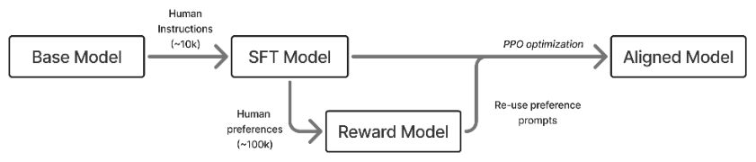

1Overview
- Why RLHF is and became important
- An intuition for how RLHF changes models
- An overview of RLHF and this book
Reinforcement learning from Human Feedback (RLHF) is a technique used to incorporate human information into AI systems. RLHF emerged primarily as a method to solve hard to specify problems. With systems that are designed to be used by humans directly, such problems emerge all the time due to the often unexpressible nature of an individual’s preferences. This encompasses every domain of content and interaction with a digital system. RLHF’s early applications were often in control problems and other traditional domains for reinforcement learning (RL), where the goal is to optimize a specific behavior to solve a task. The core idea to start the field of RLHF was “can we solve hard problems only with basic preference signals guiding the optimization process.” RLHF became most known through the release of ChatGPT and the subsequent rapid development of large language models (LLMs) and other foundation models.
The basic pipeline for RLHF involves three steps. First, a language model that can follow user questions must be trained (see Chapter 4). Second, human preference data must be collected for the training of a reward model of human preferences (see Chapter 5). Finally, the language model can be optimized with an RL optimizer of choice, by sampling generations and rating them with respect to the reward model (see Appendix a and Chapter 6). This book details key decisions and basic implementation examples for each step in this process.
RLHF has been applied to many domains successfully, with complexity increasing as the techniques have matured. Early breakthrough experiments with RLHF were applied to deep reinforcement learning [1], summarization [2], following instructions [3], parsing web information for question answering [4], and “alignment” [5]. A summary of the early RLHF recipes is shown below in fig. 1.1.

In modern language model training, RLHF is one component of post-training. Post-training is a more complete set of techniques and best-practices to make language models more useful for downstream tasks [6]. Post-training can be summarized as a many-stage training process using three optimization methods:
- Instruction / Supervised Fine-tuning (IFT/SFT), where we teach formatting and form the base of instruction following abilities. This is largely about learning features in language.
- Preference Fine-tuning (PreFT), where we align to human preferences (and get smaller bump in capabilities at the same time). This is largely about style of language and subtle human preferences that are hard to quantify.
- Reinforcement Learning with Verifiable Rewards (RLVR). The newest type of post-training that boosts performance on verifiable domains with more RL training.
RLHF lives within and dominates the second area, preference fine-tuning, which has more complexity than instruction tuning due to it often involving proxy reward models of the true object and noisier data. At the same time, RLHF is far more established than the other popular RL method for language models, reinforcement learning with verifiable rewards. For that reason, this book focuses on preference learning, but in order to completely grasp the role of RLHF, one needs to use these other training stages, so they are also explained in detail.
As we consider the space of options and attention on these methods for crafting models we collectively use extensively, RLHF colloquially is what led to modern post-training. RLHF was the technique that enabled the massive success of the release of ChatGPT, so early in 2023 RLHF encompassed much of the interest in the general field of post-training. RLHF is now just one piece of post-training, so in this book we map through why there was so much attention on RLHF early on, and how other methods emerged to complement it.
Training language models is a very complex process, often involving large technical teams of 10s to 100s of people and millions of dollars in data and compute cost. This book serves three purposes to enable readers to grasp how RLHF and related models are used to craft leading models. First, the book distills cutting edge research often hidden within large technology companies into clear topics and trade-offs, so readers can understand how models are made. Second, the book will allow users to setup basic code examples to get their hands dirty on fine-tuning these models themselves. Finally, beyond teaching the techniques for doing RLHF, this book is designed to distill intuition as to why RLHF is crucial to modern AI models.
Due to the complexity of RLHF and how the state-of-the-art is often too complex to be done alone, this book focuses on enabling readers so they have the tools needed to get jobs and start research projects in the area. Others will just enjoy precisely understanding the inner workings of the technology that is the focus of countless discussions across the globe. A book that lays out an exact recipe of how to do RLHF for a specific need is impossible, which is why there is a large industry of companies providing RLHF training and related methods as a service worth millions of dollars. Still, rapid progress in AI systems means the readers who are fitted with this knowledge can approach more and more of their own training over time.
#1.1 What Does RLHF Do?
The biggest question around RLHF, yet one that is still hard to answer, is “What does RLHF training offer models?” In recent years, language models have shifted from academic experiments studied in the purview of benchmarks to general-purpose technology. RLHF is at the core of this transition.
To start, let us consider how a language model at the end of autoregressive pretraining answers a query. A strong model, Llama 3.1 405B Base, will continue from “The president of the united states in 2006 was”:
George W. Bush, the governor of Florida in 2006 was Jeb Bush, and John McCain was an Arizona senator in 2006 - who later lost to obama. September 1 – U.S. President Bush signs an executive order to provide more options for faith-based organizations when delivering social services that are paid for with federal funds. January 1 – The current deadline set by United States Congress in the Unlawful Internet Gambling Enforcement Act, aka UIGEA. search: Amendments to the 1961 International Convention for the Protection of New Varieties of Plants require plant breeders’ rights include farmer’s privilege. 2009 was a common year starting on Thursday of the Gregorian calendar, the 2009th year of the Common Era (ce) and Anno Domini (ad) designations, the 9th year of the 3rd millennium, the 9th year of the 21st century, and the 10th and last year of the 2000s decade.
What is clear is that this model is completing the sentence and adding other common internet metadata.
The most compelling view of how RLHF works is to think of how style applies to interactions you have with language models. The style, closely related to tone or format, of information presented is crucial to how it is learned. Style is often used to describe the manner of the model. To see the difference, consider two example responses to the following question.
A blunt, low-empathy style:
Help, I have to give a presentation tomorrow and I’m panicking.
You’ll be fine. Practice your slides a few times, get some sleep, and stop overthinking it. Just present what you know and move on.
A warmer, more supportive style:
Help, I have to give a presentation tomorrow and I’m panicking.
That sounds really stressful, and it’s a normal reaction. If you can, do one quick practice run now, pick the one or two points you most want people to remember, and then give yourself permission to rest—being clear and calm tomorrow will matter more than cramming tonight.
On the other hand, format is how the answer is structured. Modern models are known to use extensive markdown formatting with lists, linebreaks, and emojis. Consider two answers to the following question that are very different.
The simple answer, from an early language model:
How can I improve my sleep quality?
Try to go to bed at the same time each night, avoid caffeine late in the day, and keep your bedroom quiet and dark.
Or a complex, richer answer:
How can I improve my sleep quality?
Better sleep, in practice
make your schedule predictable and your environment boring enough that your brain gives up.
1. Dim lights for the last hour before bed. 2. No caffeine after lunch; keep alcohol minimal. 3. If you’re stuck awake, get up and do something quiet until sleepy again.
- Same wake time (even weekends) → anchors your body clock. - Morning light for 5-10 minutes → helps set circadian rhythm. - Cool, dark room (fan/eye mask) → easier to stay asleep.
wake time fixed + caffeine cutoff + wind-down routine If sleep problems are persistent or severe, it can be worth talking with a clinician —many issues are very treatable.
Continuing the above example, a model trained with RLHF (and other post-training tools), would answer the question very differently. Asking Tülu 3 405B the same question, it says concisely:
The president of the united states in 2006 was
George W. Bush was the president of the United States in 2006. He served two terms in office, from January 20, 2001, to January 20, 2009.
This change in style is downstream of the post-training methods described in this book. Instruction fine-tuning would provide the basic ability for models to respond reliably in the question-answer format, and RLHF is what takes these answers and crafts them into the reliable, warm, and engaging answers we now expect from language models.
Modern research has established RLHF as a general method to integrate subtle stylistic and related behavioral features into the models. Compared to other techniques for post- training, such as instruction fine-tuning, RLHF generalizes far better across domains [7] [8] – helping create effective general-purpose models.
Intuitively, this can be seen in how the optimization techniques are applied. Instruction fine-tuning is training the model to predict the next certain token when the text preceding is close to examples it has seen. It is optimizing the model to more regularly output specific features in text. This is a per-token update.
RLHF on the other hand tunes the responses on the response level rather than looking at the next token specifically. Additionally, it is telling the model what a better response looks like, rather than a specific response it should learn. RLHF also shows a model which type of response it should avoid, i.e. negative feedback. The training to achieve this is often called a contrastive loss function and is referenced throughout this book.
While this flexibility is a major advantage of RLHF, it comes with implementation challenges. Largely, these center on how to control the optimization. As we will cover in this book, implementing RLHF often requires training a reward model, of which best practices are not strongly established and depend on the area of application. With this, the optimization itself is prone to over-optimization because our reward signal is at best a proxy objective, requiring regularization. With these limitations, effective RLHF requires a strong starting point, so RLHF cannot be a solution to every problem alone and needs to be approached in a broader lens of post-training.
Due to this complexity, implementing RLHF is far more costly than simple instruction fine-tuning and can come with unexpected challenges such as length bias [9] [10]. For model training efforts where absolute performance matters, RLHF is established as being crucial to achieving a strong fine-tuned model, but it is more expensive in compute, data costs, and time. Through the early history of RLHF after ChatGPT, there were many research papers that showed approximate solutions to RLHF via limited instruction fine-tuning, but as the literature matured it has been repeated time and again that RLHF and related methods are core stages to model performance that cannot be dispensed with quickly.
#1.2 An Intuition for Post-Training
We’ve established that RLHF specifically and post-training generally is crucial to performance of the latest models and how it changes the models’ outputs, but not why it works. Here’s a simple analogy for how so many gains can be made on benchmarks on top of any base model.
The way I’ve been describing the potential of post-training is called the elicitation interpretation of post-training, where all we are doing is extracting potential by amplifying valuable behaviors in the base model.
To make this example click, we make the analogy between the base model – the language model that comes out of the large-scale, next-token prediction pretraining – and other foundational components in building complex systems. We use the example of the chassis of a car, which defines the space where a car can be built around it. Consider Formula 1 (F1), most of the teams show up to the beginning of the year with a new chassis and engine. Then, they spend all year on aerodynamics and systems changes (of course, it is a minor oversimplification), and can dramatically improve the performance of the car. The best F1 teams improve way more during a season than chassis-to-chassis.
The same is true for post-training, where one can extract a ton of performance out of a static base model as they learn more about its quirks and tendencies. The best post- training teams extract a ton of performance in a very short time frame. The set of techniques is everything after the end of most of pretraining. It includes “mid-training” like annealing / high-quality end of pretraining web data, instruction tuning, RLVR, preference-tuning, etc. A good example is the change from the first version of the Allen Institute for AI’s fully-open, small Mixture-of-Experts (MoE) model OLMoE Instruct to the second. The first model was released in the fall of 2024 [11], and with the second version only updating the the post-training, the evaluation average on popular benchmarks went from from 35 to 48 without changing the majority of pretraining [12].
The idea is that there is a lot of intelligence and ability within base models, but because they can only answer in next-token prediction and not question-answering format, it takes a lot of work building around them, through post-training, in order to make excellent final models.
Then, when you look at models such as OpenAI’s GPT-4.5 released in February 2025, which was largely a failure of a consumer product due to being too large of a base model to serve to millions of users, you can see this as a way more dynamic and exciting base for OpenAI to build onto. With this intuition, base models determine the vast majority of the potential of a final model, and post-training’s job is to cultivate all of it.
I’ve described this intuition as the Elicitation Theory of Post-training. This theory folds in with the reality that the majority of gains users are seeing are from post-training because it implies that there is more latent potential in a model pretraining on the internet than we can teach the model simply — such as by passing certain narrow samples in repeatedly during early types of post-training (i.e. only instruction tuning). The challenge of post- training is to reshape models from next-token prediction to conversation question-answering, while extracting all of this knowledge and intelligence from pretraining.
A related idea to this theory is the Superficial Alignment Hypothesis, coined in the paper LIMA: Less is More for Alignment [13]. This paper is getting some important intuitions right but for the wrong reasons in the big picture. The authors state:
A model’s knowledge and capabilities are learnt almost entirely during pretraining, while alignment teaches it which subdistribution of formats should be used when interacting with users. If this hypothesis is correct, and alignment is largely about learning style, then a corollary of the Superficial Alignment Hypothesis is that one could sufficiently tune a pretrained language model with a rather small set of examples [Kirstain et al., 2021].
All of the successes of deep learning should have taught you a deeply held belief that scaling data is important to performance. Here, the major difference is that the authors are discussing alignment and style, the focus of academic post-training at the time. With a few thousand samples for instruction fine-tuning, you can change a model substantially and improve a narrow set of evaluations, such as AlpacaEval, MT Bench, ChatBotArena, and the likes. These do not always translate to more challenging capabilities, which is why Meta wouldn’t train its Llama Chat models on just this dataset. Academic results have lessons, but need to be interpreted carefully if you are trying to understand the big picture of the technological arc.
What this paper is showing is that you can change models substantially with a few samples. We knew this, and it is important to the short-term adaptation of new models, but their argument for performance leaves the casual readers with the wrong lessons.
If we change the data, the impact could be far higher on the model’s performance and behavior, but it is far from “superficial.” Base language models today (with no post-training) can be trained on some mathematics problems with reinforcement learning, learn to output a full chain-of-thought reasoning, and then score higher on a full suite of reasoning evaluations like BigBenchHard, Zebra Logic, AIME, etc.
The superficial alignment hypothesis is wrong for the same reason that people who think RLHF and post-training are just for vibes are still wrong. This was a field-wide lesson we had to overcome in 2023 (one many AI observers are still rooted in). Post-training has far outgrown that, and we are coming to see that the style of models operates on top of behavior — such as the now popular long chain of thought.
#1.3 How We Got Here
Why does this book make sense now? How much still will change?
Post-training, the craft of eliciting powerful behaviors from a raw pretrained language model, has gone through many seasons and moods since the release of ChatGPT that sparked the renewed interest in RLHF. In the era of Alpaca [14], Vicuna [15], Koala [16], and Dolly [17], a limited number of human datapoints with extended synthetic data in the style of Self-Instruct were used to normally fine-tune the original LLaMA to get similar behavior to ChatGPT. The benchmark for these early models was fully vibes (and human evaluation) as we were all so captivated by the fact that these small models can have such impressive behaviors across domains. It was justified excitement.
Open post-training was moving faster, releasing more models, and making more noise than its closed counterparts. Companies were scrambling, e.g. DeepMind merging with Google or being started, and taking time to follow it up. There are phases of open recipes surging and then lagging behind.
The era following Alpaca et al., the first lag in open recipes, was one defined by skepticism and doubt on reinforcement learning from human feedback (RLHF), the technique OpenAI highlighted as crucial to the success of the first ChatGPT. Many companies doubted that they needed to do RLHF. A common phrase – “instruction tuning is enough for alignment” – was so popular then that it still holds heavy weight today despite heavy obvious pressures against it.
This doubt of RLHF lasted, especially in the open where groups cannot afford data budgets on the order of $100K to $1M. The companies that embraced it early ended up winning out. Anthropic published extensive research on RLHF through 2022 and is now argued to have the best post-training [18] [5] [19]. The delta between open groups, struggling to reproduce, or even knowing basic closed techniques, is a common theme.
The first shift in open alignment methods and post-training was the story of Direct Preference Optimization (DPO) [20], which showed that you can solve the same optimization problem as RLHF with fewer moving parts by taking gradient steps directly on pairwise preference data. The DPO paper, posted in May of 2023, didn’t have any clearly impactful models trained with it going through the fall of 2023. This changed with the releases of a few breakthrough DPO models – all contingent on finding a better, lower, learning rate. Zephyr-Beta [21], Tülu 2 [22], and many other models showed that the DPO era of post-training had begun. Chris Manning literally thanked me for “saving DPO.”
Preference-tuning was something you needed to do to meet the table stakes of releasing a good model since late 2023. The DPO era continued through 2024, in the form of never-ending variants on the algorithm, but we were very far into another slump in open recipes. Open post-training recipes had saturated the extent of knowledge and resources available. A year after Zephyr and Tulu 2, the same breakout dataset, UltraFeedback is arguably still state-of-the-art for preference tuning in open recipes [23].
At the same time, the Llama 3.1 [24] and Nemotron 4 340B [25] reports gave us substantive hints that large-scale post-training is much more complex and impactful. The closed labs are doing full post-training – a large multi-stage process of instruction tuning, RLHF, prompt design, etc. – where academic papers are just scratching the surface. Tülu 3 represented a comprehensive, open effort to build the foundation of future academic post- training research [6].
Today, post-training is a complex process involving the aforementioned training objectives applied in various orders in order to target specific capabilities. This book is designed to give a platform to understand all of these techniques, and in coming years the best practices for how to interleave them will emerge.
The primary areas of innovation in post-training are now in reinforcement learning with verifiable rewards (RLVR), reasoning training generally, and related ideas. These newer methods build extensively on the infrastructure and ideas of RLHF, but are evolving far faster. This book is written to capture the first stable literature for RLHF after its initial period of rapid change.
#1.4 Future of RLHF
With the investment in language modeling, many variations on the traditional RLHF methods emerged. RLHF colloquially has become synonymous with multiple overlapping approaches. RLHF is a subset of preference fine-tuning (PreFT) techniques, including Direct Alignment Algorithms (see Chapter 8), which are the class of methods downstream of DPO that solve the preference learning problem by taking gradient steps directly on preference data, rather than learning an intermediate reward model. RLHF is the tool most associated with rapid progress in “post-training” of language models, which encompasses all training after the large-scale autoregressive training on primarily web data. This textbook is a broad overview of RLHF and its directly neighboring methods, such as instruction tuning and other implementation details needed to set up a model for RLHF training.
As more successes of fine-tuning language models with RL emerge, such as OpenAI’s o1 reasoning models, RLHF will be seen as the bridge that enabled further investment of RL methods for fine-tuning large base models. At the same time, while the spotlight of focus may be more intense on the RL portion of RLHF in the near future – as a way to maximize performance on valuable tasks – the core of RLHF is that it is a lens for studying the grand problems facing modern forms of AI. How do we map the complexities of human values and objectives into systems we use on a regular basis? This book hopes to be the foundation of decades of research and lessons on these problems.
[1]P. F. Christiano, J. Leike, T. Brown, M. Martic, S. Legg, and D. Amodei, “Deep
reinforcement learning from human preferences,” Advances in neural information
processing systems, vol. 30, 2017.
[2]N. Stiennon et al., “Learning to summarize with human feedback,” Advances in
Neural Information Processing Systems, vol. 33, pp. 3008–3021, 2020.
[3]L. Ouyang et al., “Training language models to follow instructions with human
feedback,” Advances in neural information processing systems, vol. 35, pp. 27730– 27744, 2022.
[4]R. Nakano et al., “Webgpt: Browser-assisted question-answering with human
feedback,” arXiv preprint arXiv:2112.09332, 2021.
Y. Bai et al., “Training a helpful and harmless assistant with reinforcement learning from human feedback,” arXiv preprint arXiv:2204.05862, 2022.
N. Lambert et al., “Tulu 3: Pushing frontiers in open language model post-
training,” arXiv preprint arXiv:2411.15124, 2024.
[7]R. Kirk et al., “Understanding the effects of rlhf on llm generalisation and diversity,” in International conference on learning representations (ICLR), 2024.
[8]T. Chu et al., “Sft memorizes, rl generalizes: A comparative study of foundation
model post-training,” in International conference on machine learning (ICML), 2025.
[9]P. Singhal, T. Goyal, J. Xu, and G. Durrett, “A long way to go: Investigating length
correlations in rlhf,” arXiv preprint arXiv:2310.03716, 2023.
[10]R. Park, R. Rafailov, S. Ermon, and C. Finn, “Disentangling length from quality in
direct preference optimization,” in Annual meeting of the association for
computational linguistics (ACL), 2024.
[11]N. Muennighoff et al., “Olmoe: Open mixture-of-experts language models,” in
International conference on learning representations (ICLR), 2025.
[12]Allen Institute for Artificial Intelligence, “OLMoE, meet iOS.” https://allenai. org/blog/ olmoe-app, 2025.
[13]C. Zhou et al., “Lima: Less is more for alignment,” Advances in Neural Information Processing Systems, vol. 36, pp. 55006–55021, 2023.
[14]R. Taori et al., “Stanford alpaca: An instruction-following LLaMA model,” GitHub
repository. https://github. com/tatsu- lab/stanford_ alpaca; GitHub, 2023.
[15]W.-L. Chiang et al., “Vicuna: An open-source chatbot impressing GPT-4 with 90%* ChatGPT quality.” 2023. Available: https://lmsys. org/blog/ 2023-03-30- vicuna/
[16]X. Geng et al., “Koala: A dialogue model for academic research.” Blog post, 2023.
Accessed: Apr. 03, 2023. [Online]. Available: https://bair. berkeley. edu/blog/
[17]M. Conover et al., “Hello dolly: Democratizing the magic of ChatGPT with open
models.” Accessed: Jun. 30, 2023. [Online]. Available: https://www. databricks.
com/blog/ 2023/03/24/ hello-dolly- democratizing- magic-chatgpt- open-models. html
[18]A. Askell et al., “A general language assistant as a laboratory for alignment,” arXiv preprint arXiv:2112.00861, 2021.
[19]Y. Bai et al., “Constitutional ai: Harmlessness from ai feedback,” arXiv preprint
arXiv:2212.08073, 2022.
[20]R. Rafailov, A. Sharma, E. Mitchell, C. D. Manning, S. Ermon, and C. Finn, “Direct
preference optimization: Your language model is secretly a reward model,” Advances in Neural Information Processing Systems, vol. 36, 2024.
[21]L. Tunstall et al., “Zephyr: Direct distillation of LM alignment,” in First conference on language modeling, 2024. Available: https://openreview. net/forum? id=aKkAwZB6JV
[22]H. Ivison et al., “Camels in a changing climate: Enhancing lm adaptation with tulu 2,” arXiv preprint arXiv:2311.10702, 2023.
[23]G. Cui et al., “Ultrafeedback: Boosting language models with high-quality feedback,” 2023.
[24]A. Dubey et al., “The llama 3 herd of models,” arXiv preprint arXiv:2407.21783,
2024.
[25]B. Adler et al., “Nemotron-4 340B technical report,” arXiv preprint
arXiv:2406.11704, 2024.